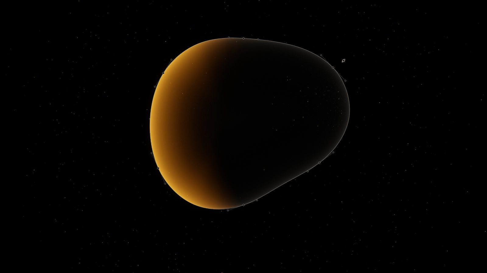
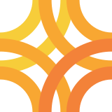
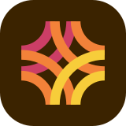

Brand · The house
khyzr.studio
khyzr.studio keeps khyzr's name, wordmark, symbol, and typeface. What is its own is a black ground, bone and ash for the words, and ember, five warm steps from yellow to rose, that arrives as an event.
khyzr, in ember.


Black leads. Ember is an event.
khyzr.studio is one of khyzr's two products. It keeps the name, the wordmark, the symbol, and the typeface, and sets them on black, with a warm color of its own.
- From khyzr: the name, the wordmark with .studio set after it, the symbol's drawing in this product's colors, Outfit at three weights, and the voice.
- Its own: the black ground, bone and ash, the ember ramp, the lacquer form, the pass, and the words on its button: "Get started".
- Not carried over: khyzr Green, the white page, khyzr's four backgrounds, labels in Manrope, and pill buttons.
- khyzr appears in the name, and nowhere else on a khyzr.studio surface: no khyzr logo beside it, and no green. See The house.
In one line.
Design, on subscription.
- The longer line, where one is needed: A senior design partner on one monthly membership.
- Both are the site's own words, as it stands.
Wordmark or icon. Never both.
The wordmark is khyzr's own, with .studio set after it. The icon is khyzr's symbol in ember. A surface carries one or the other.
| Ground | The wordmark | File |
|---|---|---|
| Black, or any dark ground | khyzr in Bone, .studio in Yellow | khyzr-studio-wordmark_on-dark |
| Bone, or the ember field | One ink: black | khyzr-studio-wordmark_black |
| White, on a page that is not its own | khyzr in near-black, .studio in Orange | khyzr-studio-wordmark_on-light |
| One ink, on a dark ground | White | khyzr-studio-wordmark_white |
- The dark cut is the default. khyzr.studio lives on black.
- The .studio is the only colored piece of type the product has.
- Inside a headline the name is typed, in the headline's own ink. The wordmark is not set into a sentence.
- The wordmark sits at the left: the top left of a page, the lower left of a slide.


| Where | The icon | File |
|---|---|---|
| On black, at 24px and up: a seal, a square space | The dark cut, bare | khyzr-studio-symbol_on-dark |
| An avatar, an app tile, a browser tab, and anything smaller | The dark cut on its deep brown tile | khyzr-studio-symbol_on-dark_badge |
| On white, at 32px and up | The light cut, bare | khyzr-studio-symbol_on-light |
| An avatar on a platform that is itself black | The light cut on a white tile | khyzr-studio-symbol_on-light_badge |
- The icon is never one color. A one-color job takes the black or the white wordmark.
- The light cut is pale on white. Give it size: 32px and up, never small.
- On Bone and on the ember field, the icon stands on its deep tile.
- The rules every product mark follows are on the Logos page.
Size and room
| Mark | Smallest on screen | Smallest in print | Clear space, every side |
|---|---|---|---|
| Wordmark | 20px tall, 106px wide | 5 mm tall | The height of the z |
| Icon, dark cut | 24px | 8 mm | One blade: two fifths of the icon |
| Icon, light cut | 32px | 10 mm | One blade: two fifths of the icon |
| Icon on its tile | 16px | 6 mm | One blade, measured from the tile: about a quarter of the tile |
Black leads. Ember is an event.
A khyzr.studio surface is black, with Bone and Ash for the words. Ember arrives when something responds, arrives, or is chosen. Once in a piece, it takes a whole surface.
- A working ratio, not law: black 65 · warm near-black 12 · bone and ash 5 · the work's own colors 5 · ember 12.
- Nearly all of that ember is one surface. Outside it, ember is about two parts in a hundred.
- One ember surface to a piece: one slide in a deck, one band on a page, one post in a set of three.
- At rest, a surface is black, Bone, Ash, and hairlines.
- The work that is shown keeps its own colors. Ember never tints it.
- The black is true black, not a dark gray and not a dark brown.
Five steps, yellow to rose.
Ground
Hairline
Ink
Ember ramp
Ember is an even staircase of five, each step a little darker and a little redder than the last.
| Step | Its color | Its job |
|---|---|---|
| Ember 1 | Yellow | The brand color. The .studio of the name, and every flat accent: a rule, an underline, a tick, a tag |
| Ember 2 | Amber | The warm middle of a gradient. The lit edge of the lacquer form |
| Ember 3 | Orange | The hot stop. The base of the ember field. The .studio on white |
| Ember 4 | Coral | The deep foot of the ember field. Where a moving light begins |
| Ember 5 | Rose | The last step. Never small text |
- Ember is a state, not a text color. Words are Bone and Ash.
- The five in order are an index: five pillars of work, five steps, first to last. Never out of order, and never five for decoration.
- A gradient runs through neighboring steps, in the ramp's order. It never jumps a step and never leaves the ramp.
The grounds and the inks
- Black is the page, the slide, and the ground of every still.
- Ink 1 and Ink 2 are the first and second steps up from black: a plate, a band, a panel one step raised.
- Hairline draws every rule and border.
- Bone is headings and the words that matter, and the product's own paper. Ash is the echo, the caption, the supporting line.
- The grays are warm. A neutral gray from another palette looks wrong beside them.
The accent follows the ground
| Ground | The mark | The accent |
|---|---|---|
| Black | Bone, with .studio in Yellow | Yellow, as a line or a small mark |
| Bone, its own paper | One ink, black | No ember line and no ember type. Ember only as a solid block, with black on it |
| The ember field | One ink, black, or the name typed in black | None. Yellow only on a black object that stands on the field |
| White, a page that is not its own | Near-black, with .studio in Orange | The .studio, and nothing more |
- Type on ember is black. Never white, and never Bone.
- Yellow is for black. On Bone or white it is too pale to carry a line or a word.
Outfit, in three weights.
Black leads. Ember is an event.
One typeface, Outfit, at Semibold, Medium, and Regular. No second face, no labels in capitals, no italic.
| Role | Size, against body text | Weight | For |
|---|---|---|---|
| Display | About four times | Semibold | The one headline of a cover or a first screen |
| Featured | Twice | Medium, or Regular for a quotation | A closing line, a step's name, a quotation |
| Statement | One and a half times | Medium | The first line of a head, in Bone |
| Continuation | A little under the statement | Medium | The second line of a head, in Ash |
| Title, lede | A little over | Medium, Regular | A card's title, the line under a headline |
| Body | The base | Regular | Running text |
| Small | A little under | Regular, Medium for a label | Captions and labels |
- A head is a pair: a claim in Bone, then its echo in Ash, at one weight and nearly one size, with no gap between them.
- Sentence case, and a period at the end of every headline.
- Emphasis is by ink, never by weight: a phrase lifted into Bone inside a sentence in Ash.
- Nothing above a headline: no label, no number, no rule.
- Large type is set tight. Type is never letterspaced wide.
- Type over a picture takes a soft black shadow. Never a glow.
A shape being drawn.
khyzr.studio's picture is a shape being drawn: a closed path, shown with its outline, its nodes and handles, and the nib that edits it, raised into dark lacquer and lit in ember at one edge.
| File | What it shows | For | Shape |
|---|---|---|---|
khyzr-studio-lacquer_on-black_pebble_3840x2160 | The pebble, with its construction | A cover | 16:9 |
khyzr-studio-lacquer_on-black_circle_3840x2160, and the leaf and the squircle | Each shape, with its construction | Dividers, in that order | 16:9 |
khyzr-studio-lacquer_on-black_pebble_plain_3840x2160, and the other three | Each shape alone | A ground under a headline; a post | 16:9 |
- A title sits centered over the form, in Bone.
- The four shapes in order make a sequence through a piece: the pebble opens, then the circle, the leaf, and the squircle.
- With its construction, the form is the subject. Plain, it is a ground.
- The form is used as it is. It is never redrawn, recolored, or imitated.
- Every still stands on black. Set on black, its edges disappear.
The pass, the ember field, and the fields.
Three more things are khyzr.studio's own: a membership pass, the one field of ember, and a set of saturated color fields.
| File | What it shows | For | Shape |
|---|---|---|---|
khyzr-studio-pass_on-ember_front_1640x3308, and the back | The pass on its lanyard, on the ember field | The membership as an object | Upright, 1:2 |
khyzr-studio-ember-field_slide_amber_3840x2160, and a deeper one | The ember field alone | The one ember slide; a post's ground | 16:9 |
khyzr-studio-ember-field_band_3840x1684 | The ember field, as a band | A band across a page | 16:7 |
khyzr-studio-dot-grid_on-black_3840x328 | A dot grid lit from beneath, with the icon as its seal | The foot of a closing slide or of a page | A strip, 12:1 |
fields/khyzr-studio-journey-, three files | Three upright color fields | A ground behind an object or one short line | Upright, 2:3 |
fields/khyzr-studio-benefit-, five files | Five square color fields | The same, square | 1:1 |
- The pass stands on the ember field and is never cut out of it. Crop the still; do not lift the pass onto another ground. Show it; never quote the words printed on it.
- The ember field carries black type and black objects. Use the PNG at large sizes.
- The dot grid carries the icon, so a surface that shows it sets no wordmark.
- The color fields carry an object or one short line, never a photograph. Crop one; never recolor, blur, or stretch it.
- No photographs of people at work, and no stock scenes. The pictures are the work itself, drawn objects, and these fields.
- Icons are filled, from one family, Phosphor, painted in one ink: Bone, black, or one step of ember.
- Hairlines and small corners, not cards: rows on rules, corners from 4 to 16, rectangular buttons. No pill-shaped buttons.
- A shadow under an object on ember is warm, never gray.
How it speaks.
khyzr.studio speaks as khyzr does. The rules are on the Voice page. These are its own habits.
- A head is a pair: a claim, then a quieter line that finishes the thought.
- Headlines are short and declarative, and end on a period.
- Labels are plain nouns. A step is named in one word.
- It speaks to "you", in short sentences.
- The work is named as a designer names it.
- The name is khyzr.studio, lowercase, wherever it stands.
- The one action is "Get started".
- American spelling.
In use.
Its deck
- Every slide is black but one. Titles are Medium; Semibold is kept for the cover, the dividers, one big number, and the closing.
- The cover is the pebble with its construction, the title centered over it. The dividers are the circle, the leaf, and the squircle, in that order.
- A working slide is set left: the wordmark at the lower left, a claim in Bone, its echo in Ash.
- A picture is a color field or the work itself, with its words under it and no card.
- A chart is Bone and Ash. Yellow marks one value.
- One ember slide to a deck: the ember field to the edges, with black type.
- The closing is one centered line over the dot grid, with the icon as its seal and no wordmark.
A post
- Black, with the plain lacquer form and one claim over it, in Bone.
- Or one color field, with one object or one short line on it.
- Or the ember field, with black type. One in a set of three, at most.
- The wordmark at the lower left, or the dot grid with its seal. Never both.
- The avatar is the icon on its deep tile.
On paper
- khyzr.studio is black on every screen. Its paper is Bone, printed in black.
- On Bone: the wordmark in one ink, black type, and ember only as a solid block with black on it. No ember line and no ember word.
- Bone is an off-white stock, or a tint printed on white.
- The ember steps print close to what a screen shows. For a full black page, ask the printer for a proof.
The values.
For anyone who needs the numbers. Print values are for coated paper.
| Color | Screen | Print, C M Y K |
|---|---|---|
| Black | #000000 | 89 78 62 97 |
| Ink 1, the first step up | #0E0C0A | 78 73 64 91 |
| Ink 2, the second | #151210 | 74 71 64 88 |
| Hairline | #25221F | 68 65 64 79 |
| Bone | #EDE7DF | 8 9 13 0 |
| Ash | #908780 | 41 38 41 20 |
| Ember 1, Yellow | #F7CD3A | 4 19 84 0 |
| Ember 2, Amber | #F8A732 | 0 41 86 0 |
| Ember 3, Orange | #F38239 | 0 59 82 0 |
| Ember 4, Coral | #E55D4E | 4 75 67 0 |
| Ember 5, Rose | #CC3E66 | 14 87 39 4 |
| The icon's tile | #3B2300 | 53 67 82 76 |
- No Pantone numbers are set. Where a color must be exact, the printer matches it against a proof.
- The swatches for design tools are in
khyzr-studio-palette.ase. - The marks are in the khyzr.studio logo pack, and the stills in its artwork folder, each as PNG and JPG.
- The site as built, value by value, is on khyzr.studio as built.